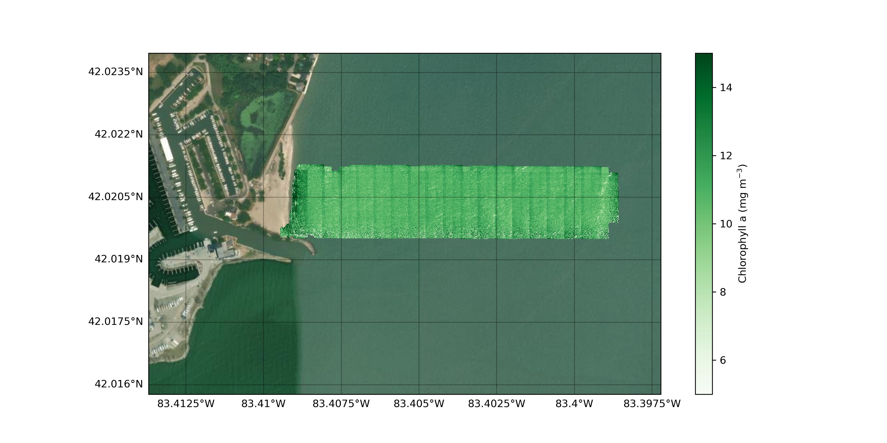

Processing and theory
Following the notation style and large body of research from the optical oceanography community, UAS can measure remote sensing reflectance (Rrs) defined as:
where LW (W m-2 nm-1 sr-1) is water-leaving radiance, Ed (W m-2 nm-1) is downwelling irradiance, θ represents the sensor viewing angle between the sun and the vertical (zenith), φ represents the angular direction relative to the sun (azimuth) and λ represents wavelength.
Like all above-water optical measurements, UAS do not measure Rrs directly as the at-sensor total radiance (LT, W m-2 nm-1 sr-1) constitutes the sum of LW and incident radiance reflected off the sea surface into the detector’s field of view, referred to as surface reflected radiance (LSR). While there is in reality also some scattering of light off air molecules and aerosols we consider that minimal at typical UAS altitudes. LW is thus the radiance that emanates from the water and contains a spectral shape and magnitude governed by optically active water constituents interacting with downwelling irradiance, while LSR is independent of water constituents and is instead governed by a given sea-state surface reflecting the downwelling light; a familiar example is sun glint. Here we define UAS total reflectance (RUAS) as:
If the water surface was perfectly flat, incident light would reflect specularly and could be measured with known viewing geometries. This specular reflection of a level surface is known as the Fresnel reflection; however, most water bodies are not flat as winds and currents create tilting surface wave facets. Due to the differing orientation of wave facets reflecting radiance from different parts of the sky, LSR can vary widely within a single UAS image. A common approach to model LSR is to express it as the product of sky radiance (Lsky, W m-2 nm-1 sr-1) and ρ, the effective sea-surface reflectance of the wave facet (Mobley 1999, Lee et al 2010):
Given measurements of Lsky, an accurate determination of ⍴ is critical to derive Rrs by:
Eq. 6 Rrs(θ, Φ, λ) = RUAS(θ, Φ, λ) − (Lsky(θ', Φ, λ) ∗ ρ(θ, Φ, λ) / Ed(λ))
DroneWQ provides multiple options from the literature for removing LSR.
A secondary challenge with aquatic UAS remote sensing is georferencing and mosaicking imagery. Many UAS remote sensing studies use Structure-from-Motion (SfM) photogrammetric techniques to stitch individual UAS images into ortho- and georectified mosaics. Current photogrammetry techniques are not capable of stitching UAS images captured over large bodies of water due to a lack of key points in images of homogenous water surfaces.
The main processing script has the ability to 1) convert raw multispectral imagery to total radiance (Lt) with units of W/m2/nm/sr, 2) remove surface reflected light (Lsr) to calculate water leaving radiance (Lw), 3) measure downwelling irradiance (Ed) from either the calibrated reflectance panel, downwelling light sensor (DLS), or a combination of the two, 4) calculate remote sensing reflectance (Rrs) by dividing Ed by Lw, and 5) mask pixels containing specular sun glint or instances of vegetation, shadowing, etc., 6) use Rrs as input into various bio-optical algorithms to derive chlorophyll a and total suspended sediment concentrations, and 7) georeference using image metadata and sensor specifications to orient and map to a known coordinate system.
Removal of surface reflected light (LT - LSR = LW)
The inclusion of LSR can lead to an overestimation of Rrs and remotely sensed water quality retrievals, as shown in Figure 1. DroneWQ provides three common approaches to remove LSR as described below. An intercomparison of LSR removal methods can be found in Windle & Silsbe (2021).

Figure 1. Example of an individual UAS image (green band) with different radiometric values: (A) RUAS, (B) RUAS with initial sun glint masking and (C–F) remote sensing reflectance (Rrs) using various methods to remove surface reflected light: (C) ⍴ look-up table (LUT) from HydroLight simulations, (D) Dark pixel assumption with NIR = 0, (E) Dark pixel assumption with NIR > 0, (F) Deglingting methods following Hedley et al (2005). Figure taken from Windle & Silsbe (2021).
In DroneWQ, we provide the following methods to calculate Lw:
blackpixel_method()
One method to remove LSR relies on the so-called black pixel assumption that assumes LW in the near infrared (NIR) is negligible due to strong absorption of water. Where this assumption holds, at-sensor radiance measured in the NIR is solely LSR and allows ⍴ to be calculated if Lsky is known. Studies have used this assumption to estimate and remove LSR; however, the assumption tends to fail in more turbid waters where high concentrations of particles enhance backscattering and LW in the NIR (Siegel et al 2000). Therefore, this method should only be used in waters whose optical propeties are dominated and co-vary with phytoplankton (e.g. Case 1, open ocean waters).
mobley_rho_method()
Tabulated ρ values have been derived from numerical simulations with modelled sea surfaces, Cox and Munk wave states (wind), and viewing geometries (Mobley 1999). Mobley (1999) provides the recommendation of collecting radiance measurements at viewing directions of θ = 40° from nadir and ɸ = 135° from the sun to minimize the effects of sun glint and nonuniform sky radiance with a ⍴ value of 0.028 for wind speeds less than 5 m/s. These suggested viewing geometries and ⍴ value have been used to estimate and remove LSR in many remote sensing studies. This method should only be used if using a UAS sensor that is angled 30-40° from nadir throughout the flight and if wind speed is less than 5 m/s.
hedley_method()
Other methods to remove LSR include modelling a constant ‘ambient’ NIR signal that is removed from all pixels. This method relies on two assumptions: 1) The brightness in the NIR is composed only of sun glint and a spatially constant ‘ambient’ NIR component, and 2) The amount of LSR in the visible bands is linearly related to the amount in the NIR band (Hedley et al 2005). Briefly, the minimum 10% of NIR radiance, min(LtNIR), is calculated from a random subset of images. Next, linear relationships are established between the LtNIR and the visible band values, which would be homogenous if not for the presence of LSR. Then, the slope (b) of the regressions are used to predict LSR for all pixels in the visible bands that would be expected if those pixels had a LtNIR value of min(LtNIR):
Lwi = Lti - bi(Lt(NIR) - min(LtNIR)), where i is each band
This method can be utilized without the collection of Lsky images.
Normalizing by downwelling irradiance (LW / Ed = Rrs)
After LSR is removed from LT, the product of that removal (LW) needs to be normalized by Ed to calculate Rrs (Eq. 6). The downwelling light sensor (DLS) or calibration reflectance panel can be used to calculate Ed.
The following are methods to retrieve Ed:
panel_ed()
An image capture of the MicaSense calibrated reflectance panel with known reflectance values can be used to calculate Ed. It is recommended to use this method when flying on a clear sunny day.
dls_ed()
The MicaSense DLS measures downwelling hemispherical irradiance (Ed) in the same spectral wavebands during in-flight image captures. According to MicaSense, the DLS is better at estimating changing light conditions (e.g. variable cloud cover) since it records DLS throughout a flight; however, it is not a perfect measurement due to movement of the UAS. The the MicaSense function capture.dls_irradiance() incorporates tilt-compensated DLS values from the onboard orientation sensor but is imperfect.
On days with changing cloud conditions it is recommended to use both the DLS and calibration reflectance panel measurements, when possible. This is done by applying a compensation factor from the calibration reflectance panel to all DLS measurements. This can be done by setting the argument dls_corr to TRUE in dls_ed().
Rrs pixel masking
An optional pixel masking procedure can be applied to Rrs data to remove instances of specular sun glint and other artifacts in the imagery such as adjacent land, vegetation shadowing, or boats when present in the imagery. Pixels can be masked two ways:
rrs_threshold_pixel_masking()
This function masks pixels based on a user supplied Rrs thresholds to mask pixels containing values > Rrs(NIR) threshold and < Rrs(green) threshold.
rrs_std_pixel_masking()
This function masks pixels based on a user supplied NIR factor. The mean and standard deviation of NIR is calculated from a user supplied amount of images, and pixels contain a NIR value > mean + std * mask_std_factor are masked. The lower the mask_std_factor, the more pixels will be masked.
Water quality retrievals
Rrs is often used as input into various bio-optical algorithms to obtain concentrations of optically active water quality constituents such as chlorophyll-a or total suspended matter (TSM). Several functions can be applied to calculate concentrations.
chl_hu()
This is the Ocean Color Index (CI) three-band reflectance difference algorithm (Hu et al 2012). This should only be used for waters where chlorophyll-a retrievals are expected to be below 0.15 mg m^-3.
chl_ocx()
This is the OCx algorithm which uses a fourth-order polynomial relationship (O’Reilly et al 1998). This should be used for chlorophyll retrievals above 0.2 mg m^-3. The coefficients for OC2 (OLI/Landsat 8) are used as default as the closest match in bands to the Micasense sensors.
chl_hu_ocx()
This is the blended NASA chlorophyll algorithm which merges the Hu et al. (2012) color index (CI) algorithm (chl_hu) and the O’Reilly et al. (1998) band ratio OCx algortihm (chl_ocx). This specific code is grabbed from https://github.com/nasa/HyperInSPACE. Documentation can be found here https://www.earthdata.nasa.gov/apt/documents/chlor-a/v1.0.
chl_gitelson()
This algorithm estimates chlorophyll-a concentrations using a 2-band algorithm designed and recommended for turbid coastal (Case 2) waters (Gitelson et al 2007).
nechad_tsm()
This algorithm estimates total suspended matter (TSM) concentrations and is tuned and tested in turbid waters (Nechad et al 2010).
Georeferencing and mapping
Many UAS remote sensing studies use Structure-from-Motion (SfM) photogrammetric techniques to stitch individual UAS images into ortho- and georectified mosaics. This approach applies matching key points from overlapping UAS imagery in camera pose estimation algorithms to resolve 3D camera location and scene geometry. Commonly used SfM software (e.g. Pix4D, Agisoft Metashape) provide workflows that radiometrically calibrate, georeference, and stitch individual UAS images using a weighted average approach to create at-sensor reflectance 2D orthomosaics. Current photogrammetry techniques are not capable of stitching UAS images captured over large bodies of water due to a lack of key points in images of homogenous water surfaces.
In DroneWQ, we provide methods for georeferencing and mosaicking UAS imagery over water based on the “direct georeferencing” technique, which compensates for the absence of common features between UAS images by using specific aspects of the aircraft’s positioning during flight (latitude, longitude, altitude, and flight orientation), along with certain sensor characteristics (focal length, image size, sensor size, and focal plane dimensions).
georeference()
This function uses MicaSense metadata (altitude, pitch, roll, yaw, lat, lon) or user supplied data to georeference all captures to a known coordinate space. See notes on georeferencing below.
mosaic()
This function mosaics all the given georeferenced captures into one georeferenced mosaicked raster file.
downsample()
This function performs a downsampling procedure to reduce the spatial resolution of the final georeferenced mosaic.
plot_basemap()
This function loads a basemap and plots the georeferenced mosaic in the axes provides using pseudo-Mercator projection (epsg:3857).
Notes on georeferencing:
The pitch, roll, and yaw angles are associated with the MicaSense sensor. The following statements should help you understand the angles:
pitch = 0°, roll = 0°, yaw = 0° means: the sensor is nadir (looking down to the ground), the sensor is assumed to be fixed (or on a gimbal), and not moving side to side, the top of the image points to the north.
pitch = 90°, roll = 0°, yaw = 0° means: the sensor is looking forward from the aircraft, the sensor is assumed to be fixed (or on a gimbal), and not moving side to side, the top of the image points to the north.
pitch = 0°, roll = 0°, yaw = 90° means: the sensor is nadir (looking down to the ground), the sensor is assumed to be fixed (or on a gimbal), and not moving side to side, the top of the image points to the east.
If possible, it is recommended to fly the UAS using a consistent yaw angle (e.g. UAS/sensor does not turn 180° every transect). This will make georeferencing easier and alleviate issues with changing sun glint on different transects. Some UAS flight planning softwares allow you to do this (e.g. UgCS. If not, it is recommended that you note the UAS/sensor’s yaw angle and use this in the
georeference()function.If a yaw angle is not available, it is recommended to test a couple captures that contain land or the shoreline. The MicaSense sensor contains an Inertial Measurement Unit (IMU) that collects data on the sensor pitch, roll, and yaw; however, this data can be impacted by IMU errors, especially during turns and windy flights. You can see how much the sensor yaw angle varies by plotting the IMU metadata yaw angle over captures. An example is included in the primary_demo.ipynb.
If you have a small dataset, you can manually go through the captures to select which ones line up with what transect to inform the yaw angle in the georeference() function. It is recommended to skip images that are taken when the UAS/sensor is turning since the IMU is prone to errors during UAS turns.
If you have a large dataset where this can be too time consuming, we have provided functions to automatically select captures with varying yaw angles that line up with different transects. The
compute_flight_lines()function returns a list of image captures taken in different transects that contain consistent yaw angles. This can be incorporated into thegeoreference()function to improve georeferencing and mosaicking.

Figure 2. Final orthmosaic of UAS images collected over Western Lake Erie processed to chlorophyll a concentration.
References:
Windle A.E. and Silsbe G.M., Evaluation of Unoccupied Aircraft System (UAS) Remote Sensing Reflectance Retrievals for Water Quality Monitoring in Coastal Waters. Front. Environ. Sci. 9:674247. (2021) doi: 10.3389/fenvs.2021.674247
Mobley C.D., Estimation of the remote-sensing reflectance from above-surface measurements, Appl. Opt. 38, 7442-7455 (1999) doi: 10.1364/AO.38.007442
Lee Z., Ahn Y., Mobley C.D., and Arnone R., Removal of surface-reflected light for the measurement of remote-sensing reflectance from an above-surface platform, Opt. Express 18, 26313-26324 (2010) doi: 10.1364/OE.18.026313
Hedley, J. D., Harborne, A. R., & Mumby, P. J., Technical note: Simple and robust removal of sun glint for mapping shallow‐water benthos. International Journal of Remote Sensing, 26(10), 2107–2112. (2005) doi: 10.1080/01431160500034086
Siegel D.A., Wang M., Maritorena S., and Robinson W., Atmospheric correction of satellite ocean color imagery: the black pixel assumption, Appl. Opt. 39, 3582-3591 (2000) doi: 10.1364/AO.39.003582
Hu, C., Z. Lee, and B. Franz, Chlorophyll aalgorithms for oligotrophic oceans: A novel approach based on three-band reflectance difference, J. Geophys. Res., 117, C01011, (2012) doi: 10.1029/2011JC007395
O’Reilly, J. E., S. Maritorena, B. G. Mitchell, D. A. Siegel, K. L. Carder, S. A. Garver, M. Kahru, and C. McClain, Ocean color chlorophyll algorithms for SeaWiFS, J. Geophys. Res., 103(C11), 24937–24953, (1998) doi: 10.1029/98JC02160
Gitelson A.A., J. F. Schalles, C. M. Hladik, Remote chlorophyll-a retrieval in turbid, productive estuaries: Chesapeake Bay case study, Remote Sensing of Environment, 109(4), 464-472, (2007) doi: 10.1016/j.rse.2007.01.016.
Nechad B., K.G. Ruddick, Y. Park, Calibration and validation of a generic multisensor algorithm for mapping of total suspended matter in turbid waters, Remote Sensing of Environment, 114(4), 854-866, (2010) doi: 10.1016/j.rse.2009.11.022.